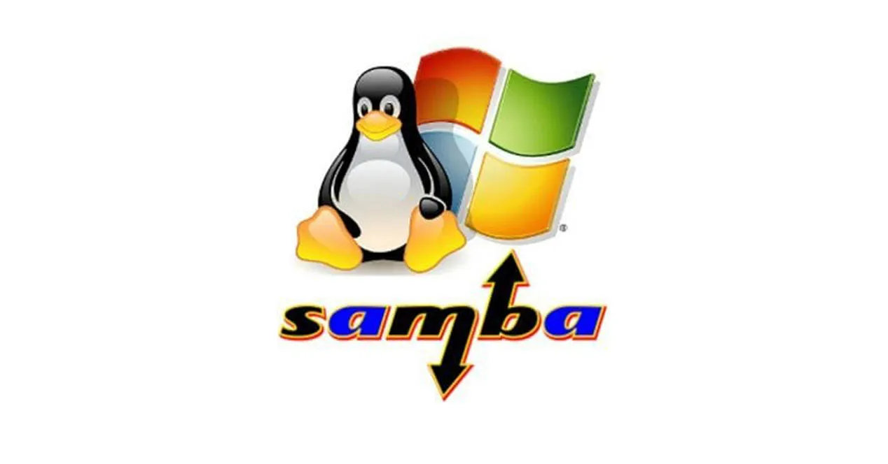
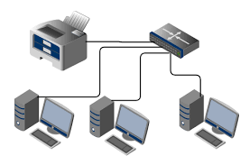
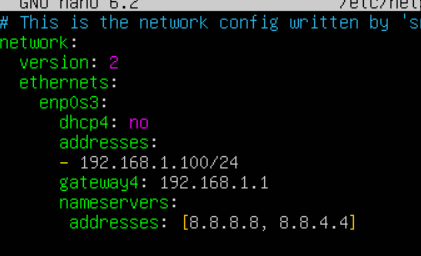
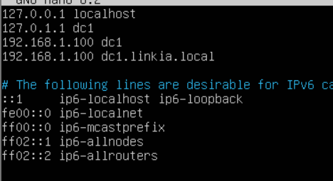

UT6 · Integración de sistemas libres y propietarios
Esta unidad aborda la interoperabilidad entre sistemas operativos libres y propietarios en redes corporativas. Se estudia cómo Linux, Windows y otros sistemas pueden comunicarse, compartir recursos y funcionar de forma integrada, garantizando eficiencia, seguridad y continuidad del servicio.
1. Introducción a la interoperabilidad
La interoperabilidad es la capacidad de distintos sistemas operativos para comunicarse, intercambiar información y utilizar recursos de forma conjunta, independientemente de su fabricante o arquitectura.
- Acceso transparente a recursos compartidos.
- Coexistencia de software libre y propietario.
- Optimización del rendimiento global de la red.
- Garantía de seguridad e integridad de los datos.
1.1 Ventajas de la integración
La integración de sistemas libres y propietarios aporta beneficios técnicos, económicos y organizativos, permitiendo aprovechar las fortalezas específicas de cada plataforma.
- Complementariedad tecnológica (Linux en servidores, Windows en gestión y usuarios).
- Reducción de costes mediante software libre.
- Escalabilidad y flexibilidad de la infraestructura.
- Independencia de proveedor (vendor lock-in).
- Estandarización de protocolos abiertos.
- Mejora de la seguridad y la resiliencia.
1.2 Escenarios heterogéneos
Los escenarios heterogéneos son entornos donde conviven distintos sistemas operativos, cada uno con un rol específico dentro de la red corporativa.
- Compartición de archivos mediante Samba o SMB.
- Impresión en red con CUPS, IPP o SMB.
- Autenticación centralizada con Active Directory, Kerberos y LDAP.
- Distribución de servicios entre servidores Linux y Windows.
- Virtualización y nube híbrida con sistemas mixtos.
2. Servicios de compartición entre sistemas
Los servicios de compartición permiten intercambiar archivos, impresoras y otros recursos entre plataformas diferentes de forma transparente para el usuario final.
2.1 NFS, Samba y otros servicios
NFS y Samba son los protocolos más utilizados para compartir recursos en entornos mixtos Linux–Windows, complementados por otros servicios según las necesidades de seguridad y acceso remoto.
- NFS: alto rendimiento en entornos Linux/Unix.
- Samba (SMB/CIFS): interoperabilidad total con Windows.
- FTP / SFTP para transferencia de archivos.
- WebDAV para acceso vía HTTP.
- rsync y SSHFS para sincronización y acceso seguro.

2.2.1 Configuración básica de SAMBA
La configuración de Samba en Linux para compartir recursos con Windows implica editar el archivo
smb.conf y definir los recursos a compartir, los permisos y las opciones de seguridad.
- Instalación de Samba:
sudo apt install samba. - Edición de
/etc/samba/smb.confpara definir recursos compartidos. - Configuración de usuarios Samba con
smbpasswd. - Reinicio del servicio con
sudo systemctl restart smbd.
[compartido]
path = /home/compartido
read only = no
browsable = yes
valid users = @users2.2.2 Crear usuario SAMBA
Para crear un usuario Samba en Linux, se debe crear primero el usuario del sistema y luego agregarlo a Samba con una contraseña específica.
- Crear usuario del sistema:
sudo useradd -m nombre_usuario. - Agregar usuario a Samba:
sudo smbpasswd -a nombre_usuario.
sudo useradd -m juan
sudo smbpasswd -a juan2.2.3 Configurar cliente Windows para acceder a recurso compartido
Para acceder a un recurso compartido de Samba desde Windows, se puede utilizar el Explorador de
archivos o el comando net use en la línea de comandos.
- Acceso mediante Explorador de archivos:
\\IP_del_servidor\compartido. - Acceso mediante línea de comandos:
net use Z: \\IP_del_servidor\compartido /user:usuario.
net use Z: \\IP_del_servidor\compartido /user:usuario2.2 Configuración cruzada de recursos
La configuración cruzada permite que Linux y Windows actúen indistintamente como servidores o clientes de recursos compartidos.
- Linux comparte recursos a Windows mediante Samba.
- Windows comparte carpetas accesibles desde Linux con CIFS.
- Buenas prácticas: usuarios sincronizados, permisos coherentes y copias de seguridad.
3. Acceso a recursos entre plataformas
Un entorno interoperable debe garantizar el acceso a sistemas de archivos y dispositivos compartidos sin conflictos de formato, permisos o controladores.
3.1 Sistemas de archivos
Cada sistema operativo utiliza su propio sistema de archivos, por lo que es fundamental conocer su compatibilidad y los métodos de acceso cruzado.
- NTFS, FAT32 y exFAT en Windows.
- EXT4 y XFS en Linux.
- Acceso directo mediante controladores o acceso remoto mediante servicios de red.
3.2 Impresoras compartidas
La compartición de impresoras en entornos mixtos se realiza mediante protocolos estándar que garantizan compatibilidad entre plataformas.
- SMB/CIFS para integración con Windows.
- IPP como estándar recomendado por su soporte de seguridad.
- CUPS como sistema de impresión en Linux.

4. Seguridad en entornos mixtos
La seguridad en redes heterogéneas requiere integrar autenticación, control de acceso, cifrado y auditoría entre sistemas distintos.
4.1 Control de acceso
El control de acceso define quién puede acceder a los recursos y qué acciones puede realizar, manteniendo coherencia entre Linux y Windows.
- Autenticación, autorización y auditoría.
- Modelos DAC y RBAC.
- Unificación de identidades con Active Directory y LDAP.
- Cifrado con SMB3, Kerberos, TLS y VPN.
4.2 Pruebas de funcionamiento
Las pruebas de funcionamiento permiten validar que los servicios interoperables están correctamente configurados y son seguros.
- Pruebas de conectividad, autenticación y acceso a recursos.
- Verificación de permisos y cifrado.
- Revisión de logs y documentación de resultados.
Actividad 1 · Dominio Samba + Windows
En esta guía vas a crear un dominio Samba en Linux y unir un equipo Windows al dominio. Sigue los pasos en orden y ejecuta exactamente los comandos indicados.
Paso 1 · Preparar la red (Linux)
El servidor Linux debe tener IP fija, nombre correcto y resolución DNS funcional.
- IP fija (ejemplo):
192.168.1.10 - Nombre del servidor:
dc1 - Dominio:
empresa.local

Editar hostname: sudo nano /etc/hostname
dc1
Editar hosts: sudo nano /etc/hosts

hostname
ip a
ping 8.8.8.8Paso 2 · Instalar Samba y dependencias
Instala los paquetes necesarios para que Linux funcione como Controlador de Dominio Samba.
sudo apt update
sudo apt upgrade -y
sudo apt install samba winbind krb5-user smbclient dnsutilsEn la pantalla de instalación, tienes que poner:
- Contraseña para el usuario Administrator
Paso 3 · Crear el dominio Samba
Se inicializa el dominio y se configura Samba como Controlador de Dominio Active Directory.
sudo samba-tool domain provision \
--use-rfc2307 \
--realm=EMPRESA.LOCAL \
--domain=EMPRESA \
--server-role=dcDurante el proceso, introduce una contraseña segura para Administrator.
Paso 4 · Activar servicios Samba
Se detienen servicios antiguos y se inicia el servicio principal de Samba AD.
sudo systemctl stop smbd nmbd winbind
sudo systemctl disable smbd nmbd winbind
sudo systemctl start samba-ad-dc
sudo systemctl enable samba-ad-dcPaso 5 · Crear usuarios del dominio
Se crean usuarios que iniciarán sesión desde Windows.
sudo samba-tool user create alumno1
sudo samba-tool user create profesor1Paso 6 · Unir Windows al dominio
En el equipo Windows:
- Configura como DNS la IP del servidor Linux (
192.168.1.10) - Panel de control → Sistema → Cambiar configuración
- Selecciona Dominio e introduce:
empresa.local - Usuario:
Administrator
Paso 7 · Pruebas finales
Comprueba que todo funciona correctamente.
- Inicia sesión en Windows con
EMPRESA\alumno1 - Accede a recursos compartidos
- Documenta capturas
Actividad 2 · Linux cliente al dominio
En esta actividad unirás un cliente Linux al dominio Samba creado en la Actividad 1.
Paso 1 · Preparar cliente Linux
El cliente debe usar el servidor Samba como DNS y tener la hora sincronizada.
sudo timedatectl set-ntp true
ping dc1.empresa.localPaso 2 · Instalar paquetes
Estos paquetes permiten autenticación contra el dominio.
sudo apt install realmd sssd krb5-user samba-common-binPaso 3 · Probar Kerberos
Comprueba que el cliente obtiene tickets del dominio.
kinit administrador
klistPaso 4 · Unir Linux al dominio
Se une el equipo Linux al dominio Samba.
sudo realm join empresa.local -U Administrator
realm listPaso 5 · Prueba de inicio de sesión
Verifica que los usuarios del dominio pueden iniciar sesión.
su - alumno1@empresa.local
id alumno1@empresa.localResultado esperado
Al finalizar, tendrás un dominio Samba funcional con Windows y Linux autenticándose de forma centralizada, cumpliendo todos los criterios de evaluación de la UT6.